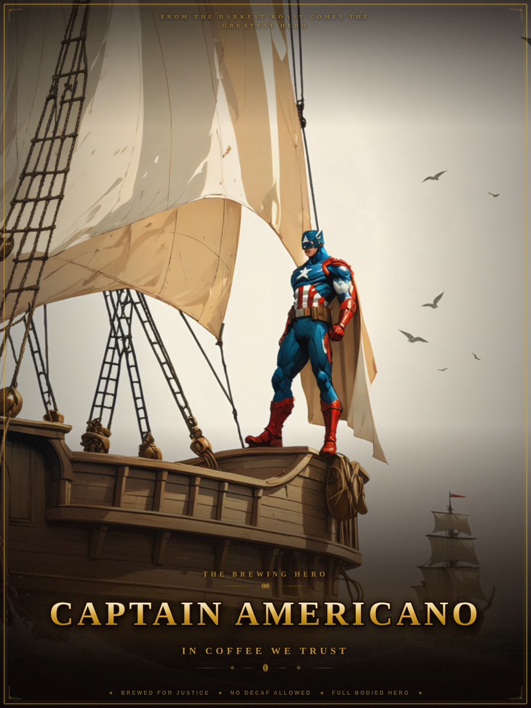

Transmission Line
Ask Captain Americano
The Captain's been brewing answers since 1942. Pour a question, he'll pour some wisdom.
Captain Americano
At ease, soldier. Pull up a mug. What's on your mind?
The Origin
Born in a Brooklyn Cafe, 1942
Before the shield, before the serum, there was a skinny kid from Brooklyn with a bad back and a worse espresso machine. They said he couldn't brew. They said he couldn't pull a proper shot. He didn't listen.
A classified program. An experimental bean. One courageous taste test. What emerged was no ordinary barista. He was peak human performance in a red-white-and-blue apron — and he had a shield made of reinforced porcelain.
Today, he stands watch over every break room, every third-wave cafe, every office Keurig that's seen better days. Wherever coffee is needed, wherever decaf threatens liberty, Captain Americano answers the call.
Wisdom from the Captain
Words to Brew By
"I could brew this all day."
— Captain Americano, every morning
"The price of freedom is high. The price of a good espresso is higher. Both are worth it."
— Captain Americano
"When the whole world tells you to drink decaf, it's your duty to plant yourself like a French press, look them in the eye, and say no, you move."
— Captain Americano
"On your left. That's where I keep my cream."
— Captain Americano, mid-jog